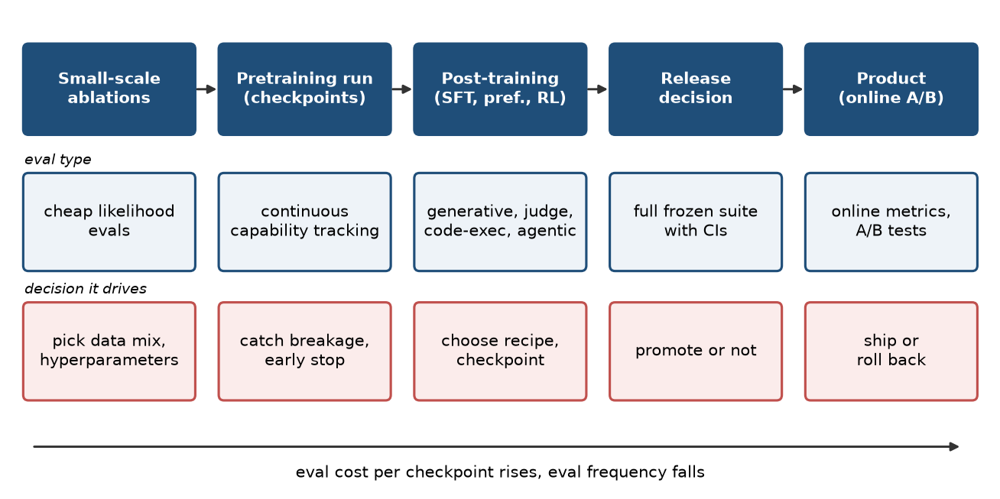

Eval study notes · Coding practice set
Most people who say “evals” mean a leaderboard number in a model card. Eval platform engineering is about something much less glamorous and much more consequential: the machinery that tells a training team, every few hours, whether the run that is burning thousands of GPUs is going the right way. Before any architecture or statistics, it is worth being clear about who consumes evaluation results inside a lab, what decisions those results drive, and therefore what “good” means for the platform. That framing is what will make your answers sound like a principal engineer’s rather than a benchmark enthusiast’s.
Think of an eval platform at a frontier lab as serving four groups, each with different needs for speed, cost and rigour.
The first is the pretraining team. A large pretraining run lasts weeks to months and writes a checkpoint every few hundred or thousand steps. The team needs a cheap, fast, low-noise read on every checkpoint: is loss on held-out data still falling, are capability evals trending as expected, did anything break (a data-loader bug, a bad data shard, a numerical instability) that shows up as a sudden drop? These in-training evals have to keep pace with checkpoint production, so they are small, mostly likelihood-based (Chapter 9 explained why continuous metrics carry more signal early), and they run continuously. A pretraining team also runs dozens of small-scale ablations to decide data mixtures and hyperparameters, and evals on those small models are how they choose what goes into the big run. Here the statistics of Part II stop being academic: if the eval suite cannot tell two ablations apart, the lab is choosing its training recipe by coin toss.
The second is the post-training team, which turns a base model into a chat or reasoning model through supervised fine-tuning, preference optimisation and reinforcement learning. Their evals are generative (the model writes long answers, often with chains of thought tens of thousands of tokens long), include instruction-following, maths, coding, agentic tasks, safety and style, and lean heavily on graders that execute code or call a judge model. RL training adds a twist that matters for this job: the graders used to compute rewards during training and the graders used for evaluation are often the same code, which means a grader bug can silently corrupt both the training signal and the measurement of it. This overlap is why eval platform roles often sit next to RL training infrastructure.
The third is the people deciding what ships: release managers, safety teams and leadership deciding whether a checkpoint is promoted to a product. Their evals are the full suite at full rigour, with frozen configs, confidence intervals, comparisons against the incumbent model and against competitors, and safety and policy evaluations that may have formal sign-off requirements.
The fourth is the product team, measuring the model inside Copilot or another surface with online A/B tests and product-specific offline sets. At many labs this is a separate stack, but the eval platform will be asked to run their offline sets too.

It helps to have a crisp set of properties you can name when an interviewer asks what makes an evaluation platform good. Six cover nearly everything.
Correctness comes first, because a wrong eval number is worse than no number: researchers will act on it. Correctness means graders that are tested, configs that are versioned, and results that can be traced to exactly what produced them. Reproducibility follows: rerunning the same eval on the same checkpoint should give the same answer, or at least an answer within known noise, which requires pinning the dataset revision, the prompt template, the sampling parameters, the inference engine version and the grader version. Statistical honesty is the third: results come with uncertainty, comparisons are paired, and the platform makes the noise visible rather than letting researchers chase it. Freshness is fourth: results must arrive while they can still change a decision, which for in-training evals means keeping up with checkpoint cadence and for ablations means turning a sweep around in hours, not days. Efficiency is fifth: eval compute competes with training compute, and at frontier scale the evaluation bill is a real line item, so throughput per GPU-hour matters. Operability is last: when something breaks at 3am, or on a busy Monday morning, the on-call engineer can see what broke, why, and what to do, which is what people mean by dashboards, alerts and runbooks.
Every chapter in Part I maps to one or two of these. Chapter 2 is about the architecture that makes correctness and reproducibility possible. Chapter 3 is about graders, where most correctness bugs live. Chapter 4 is about freshness and efficiency. Chapter 5 is about operability and the specific ways evaluation degrades. Chapter 6 assembles them into the answer you would give to “design an evaluation platform for a frontier lab”.
An evaluation platform in a lab serves pretraining (cheap, continuous, low-noise checks on every checkpoint and on small ablations), post-training (generative, judge- and execution-graded, often sharing graders with RL rewards), release decisions (full frozen suite with uncertainty) and product teams. Eval platform engineering is reliability and platform engineering for that system, with eval knowledge as the differentiator, not the core. A good platform is correct, reproducible, statistically honest, fresh, efficient and operable, and in an interview you should be able to name those six and show how each design choice serves one of them.